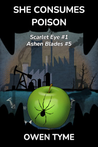
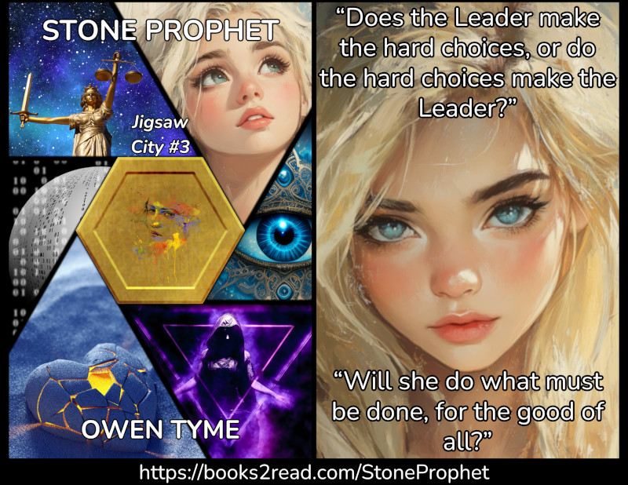
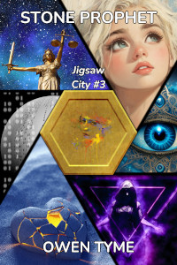

Tymely News
Rowley's Roar #3
For today's blog post, one of the fictional characters from my novels will be sharing a few messages. No, I'm not going crazy. I'm just having a little fun with writing from the perspective of one of my characters, to explain her music.
Without further adieu, please once again welcome Captain Edwina "Roaring" Rowley, who shall be taking a moment to explain another song from an album we're compiling.
The Offer (Can't Refuse)
Hello there, little itches.
Today, I'll start with a little recap, because the previous song, Mythril Guitar, also known as Outcast, dovetails straight into today's piece, The Offer (Can't Refuse).
There I was, on the run from The Order of Newts, with Matron Talbot's personal ship hot on my heels, because she was real mad I'd built my mythril guitar, despite her orders to the contrary. Even worse, my guitar's roar had woken and angered every witch within a hundred miles of her first performance, so there was a whole fleet of pissed-off witches that wanted me dead.
Totally not my fault, of course. It's just their way, stomping out anyone that's dares to be different, particularly the old bat in charge, who was always real inflexible. Honestly, why all the trouble over one little guitar?
We ran the engines as hard as we dared and even deployed the light sails, for extra thrust, but Matron Talbot was so overcome with rage, her fleet did the very same.
It's not a safe thing to do, pushing a ship so hard, but knowing we had no better option, my dear old boss and I threw every bit of magic we could spare into enhancing propulsion. In the end, we even suspended artificial gravity, to get a little more oomph out of the spell-core.
Unfortunately, it wasn't enough, because Talbot's ship had more witches on board and with all of them focused on forward thrust, we had mere days to run, before they would inevitably reach weapon's range and let me tell you, it was obvious the old bat didn't intend to be merciful.
I tried bone-transduction, to talk her down, but she'd put a protective spell around her ship, to block it. I have no idea how she did that, because I've never seen anything that can block that magic, before or since, but never count down a ticked-off old witch that's steeped in guile, even if she's a cracked old bat.
In the end, my friend and I looked at options, ranging from a half-crazed gravity slingshot maneuver using the mass of Junas to fling us into deep space, but without months of food on hand, that would have been suicide.
In the end, we settled on a terrible and awful option: we changed course to run straight for Nuva (the moon, not the Goddess), the very heart of pirate territory, which the Dead Queen calls home.
I've always found it strange that the mortuary world is in pirate territory, but the pirates have never interfered with the death barges, allowing proper burial of those that die in space, without turning every world into a cemetery. Those same ships even carry visitors that wish to visit the graves of family, back and forth, but never harassed.
I thought it would be a good bluff, because I knew how much the Matron fears the Dead Queen. No other had ever openly fought The Order of Newts and won. No other was so quick to inspire terror in the heart of Matron Talbot. I'd even heard her speak in hushed tones about the odds of success against that monster, if the Order went all out and the Matron didn't like her chances, considering it no better than thirty percent chance of success, though the cost would be incredibly high, leaving the Order weakened for centuries to come, even with success.
Matron Talbot followed me into pirate space, which should tell you exactly how enraged the old bat was. She was willing to risk going to war with the pirates, just to kill little old me. In a strange way and back-handed was, that's quite the compliment. On the other, it also meant the Matron had checked her sanity at the door.
And on we ran, until I looked back, then laughed and shouted, "She's slowing down! It worked!"
My friend, still looking forward, shook her head and muttered, "Yeah, but I don't think you're gonna like the reason."
I looked and I didn't like it. There, coming around the horizon of Nuva was the mother of all pirate ships, Foundation Stone, a flying mountain of solid granite eight miles across!
I'd caught the personal attention of the Dead Queen, which is not something the average witch can survive. I turned aside, to consider my options.
Looking one was at certain death, then the other, to an uncertain fate, I chose life. I reduced engine power and allowed my ship to be captured, in the hopes of living through the day.
In the end, we were taken and dragged before the pirate Queen, forced to kneel as she took our measure, from behind, as was her way.
I spoke more fluidly and skillfully than ever before, spurred on by imminent death, begging for our lives. I even offered to entertain the Queen and a battered, old guitar was pressed into my hands.
Without seeing my host, I strummed my heart out and bore my soul to the Queen in song, holding nothing back. I sang Twinkle and Spin for her, putting all the emotion of my heart into it.
When I was done, I related the story of constructing my mythril guitar, followed by fleeing into space.
The Queen laughed for close to ten minutes, until her voice was hoarse and she coughed up some blood. That's when she stepped into view and the nature of her title fully sunk into my mind: she was a walking corpse, having magically bonded her soul to her bones, that she might last beyond death. It wasn't much of a surprise, since her crew were also undead.
She smiled at me and made the offer I knew I couldn't refuse: "I'm always in need of good lieutenants and I've never seen anyone upset a Matron of the Order quite so much, aside from me. That has endeared you to me and purchased a stay of execution.
"If you perform well in my service, you may purchase another. Fail and I will consume your soul."
What can a desperate girl say to that? I took the job and the Queen gave me wealth beyond imagining, to construct a battleship of my very own, but that's a story for another song...
Here's The Offer (Can't Refuse) for you to enjoy:
Lyrics
Chorus:
No pirate woman was I,
Not the monster you might think,
A musician flying high,
Pushed all the way to the brink!War drums beating as I run,
The void awaits, doom may come!
The Matron's nature undone,
For my guitar, I did strum!Fly fast and far, to the stars,
But nowhere is far enough!
Engines burn in ship of ours,
To Nuva's home, I would bluff!(Chorus)
The Matron stops and I laugh,
Finally thinking I'm free!
Look ahead and see my gaffe,
Turn in mad attempt to flee!Pirate Queen and the Matron,
Caught betwixt the two was I!
To neither fate was I drawn,
Yet for one I had to try!(Chorus)
Certain death or unknown fate?
I chose the second option!
I faced the Queen in dire strait,
She was the lesser toxin!Amused with me, the Queen was,
And she offered me a job!
If I'd said no, just 'cause,
Then I'd be her kabob!(Chorus)
Here's a link to the MP3 file, if you'd like to download it.
The Offer (Can't Refuse) is copyright 2026, Owen Tyme, all rights reserved, but free for your personal enjoyment. Lyrics by Owen Tyme, music generated by ACE-Step 1.5. E-mail me if you want to use it for something else.
Tags: audio, music, roaring-rowley
Rowley's Roar #2
For today's blog post, one of the fictional characters from my novels will be sharing a few messages. No, I'm not going crazy. I'm just having a little fun with writing from the perspective of one of my characters, to explain her music.
Without further adieu, please once again welcome Captain Edwina "Roaring" Rowley, who shall be taking a moment to explain another song from an album we're compiling.
A Technical Discussion on Mythril
Hello again, little itches.
To begin, I ought to teach you a little something about mythril, but I'll apologize in advance, because it's...really technical and scientific. I know it bored the living crap out of me in school and I barely got passing grades on this stuff, even though it became rather important, later down the road.
If you'd rather get straight to the music and my story, skip ahead to the section below, titled 'Mythril Guitar (Outcast)'.
Anyway, mythril is one of the heaviest metals in existence, with an atomic number of 176, which firmly places it in something known as the Island of Stability. However, I'm told the only thing that keeps the atomic nuclei from spontaneously exploding is the natural background magic of the galaxy, just like all the super-heavy elements.
The Seeding Process
According to the old bats running The Order of Newts, many of the super-heavy elements, mythril included, were artificially seeded in our home star system, using ancient relics of enormous power, which are completely beyond the understanding of modern witches.
Each of those little things is a metal hexagon, which resembles a coin. They're made of orichalcum, which is an alloy of mythril and another super-heavy element, which are totally indestructible in that form.
All attempts to analyze their magic only causes them to speak, saying, "I am Kurg." And that's not exactly helpful. So, these "Kurg" things hold massive amounts of magic and can be coaxed by witches into disgorging it in rays of insanely powerful magic, which can force elements to go through a cold-fusion process that prodoces a good dozen or so elements from the island. Really scary stuff, if you ask me. Who knows what would happen if you got caught in the rays... I'm told it's a sickeningly slow death.
Of course, all of that is a closely guarded secret, but I don't care! Screw those old bats and their stupid secrets, because everyone should know!
Anyway, getting back to the point, when my ancestors settled in the Solus system and completely rearranged the planets to their liking, they blasted every rock with Kurg rays from those ancient artifacts.
However, once the reaction is kicked off, it keeps going on its own, because the enchanted elements naturally draw magic into themselves, feeding the process in nearby elements susceptible to the effect. Mythril usually forms in veins of argentiferous galena, for example, from the fusion of lead and silver, if memory serves.
Mining
With that out of the way, all that's left is to mine the ore, which is incredibly dangerous work, because even small accumulations of mythril without restraining runes can produce random surges of magic, which can be shaped by the imagination of any intelligent being.
Incidentally, that's how it's usually found in the ground; the Order regularly investigates reports of poltergeist activity, which often leads to mythril deposits.
Dwarves are the most reliable way to mine mythril, since they're more resistant than average to magic and fairly unimaginative. With a certain amount of training, they're able to keep their minds razor focused on mining and manage to avoid shaping the surges
For other races, it takes exceptional concentration, usually with a self-hypnosis technique, to keep the imagination shackled for the duration.
Processing, Forging and Dragon Breeding
Again, dwarves are handy for this, because until mythril is stamped with runes to restrain its magic, it can cause all sorts of trouble.
The only problem with that is the incredibly high melting point, requiring a plasma furnace. Yes, you read correctly, a freaking plasma furnace!
However, since most of those the Order has built are powered by mythril, I bet you're asking the obvious question: how did anyone shape it in the first place?
I'm glad you asked, because it's something that's a part of my song, Mythril Guitar. It takes a dragon. The only thing in the universe with a flame hot enough is dragon fire, and even then, it takes a real exceptional specimen, with hotter than average flame, far beyond the mundane.
According to my reading, that particular sub-species is a cross-breed of the common fire drake and the exceedingly rare arc-spitters, which eschew flame and instead have over-amped electrical organs in the back of their throat. Most dragons only spark to make a flame, but that breed push that ability to the absolute limits, producing electrical arcs that can reach as far as thirty feet and burn as bad as natural lightning!
That cross-breeds encompasses all that's dangerous in a dragon, able to spit both flame and lightning, but when they're coaxed to mix the two, they form plasma. Even worse, their temperaments are utterly awful and they're spiteful little...ahem. Turds. I don't know why, but Owen keeps telling me to stop cursing. I guess he doesn't like it.
Regardless of how the metal is melted, once some runes are added, the surges stop, because the magic gains a natural outlet and the runes generally only activate when required. That can cause the magic to build up in the metal over time, which makes any enchanted item made from it exceptionally powerful.
Mythril Guitar (Outcast)
Mythril Guitar, which is also alternatively titled Outcast, is one of my favorite songs. It continues my life story as started in Twinkle and Spin, which you can learn more about in my previous "post" (I don't quite understand what Owen means by "posts" and I keep thinking of paper mail).
So, during my last days in The Order of Newts, I got involved in a mythril mining and smelting operation and my payment was supposed to be a small percentage of refined mythril, for any purpose I might put it to. I set aside most of my earnings to give my new star ship a more powerful spell-core.
However, as I worked, I began drawing up plans for a very special guitar, which would be capable of all sorts of magical effects, based on sound manipulation, ranging from amplification to enhanced bone-transduction spells, to send my performance over long range. Part of the design involved being able to alter the sound, to make it extremely adjustable, based on whatever I might imagine.
I remember having innocently left my blueprints out one day as I worked, only for Matron Talbot to wander into the smelting facility. While I was oblivious, because I was wearing protective clothes and a darkened mask to shield my eyes from the intense light of the plasma furnace, the old bat looked over the plans, her frown growing worse.
Eventually, she commented, "It is bizarre!"
I switched off the furnace to set aside some rune-stamped ingots to cool, then lifted my mask. I was surprised to see the old bat in charge of the entire Order staring back at me, her frown having grown even worse. She was holding the plans for my mythril guitar.
"You will not build this." She declared, then threw my blueprints into the furnace, causing them to flash into flame, "Mythril is not intended for music. You will use your earnings for something serious and important, not your foolish flights of fancy."
You would not believe how angry I was. Within the confines of my own mind, every bridge between myself and the Order burned, just like the plans for my guitar, because Matron Talbot had not only insulted me, but also declared war on my identity. She had no right and I vowed to prove that fact to her.
Nonetheless, just because the Matron said something, didn't make it law and to make something actually illegal takes time.
The coming days were a political power struggle like no other I'd ever seen, because I'd earned a full pound of mythril, above and beyond what had gone into my ship's spell-core and Matron Talbot couldn't strip me of my pay on a whim.
However, what she was able to do was get me fired from my job, denying me access to the equipment required for the work.
On the other hand, my old boss didn't like what she'd been forced to do and she stuck by me. For three days, we wracked our brains for a way to build my guitar, while the old bats running the Order worked as hard as they could to make using mythril for music illegal.
Can you imagine a more cracked set of old bags? One of them decides what I'm doing is too frivolous, then all the rest back her up, while the younger witches seemed to think my plans were at least interesting, even though they thought I was crazy.
In the end, we found a dragon breeder that had one of the plasma-spitters and I bought one. That was a crazy day, because while I was also sold all the gear I needed to work with the high-strung beast and keep its fires running for hours on end, I didn't really know what I was doing. Fortunately, my old boss was good with earth magic and managed to shape a rocky hill into restraints for my new pet.
And boy, was he mad! He didn't like being held down, which was exactly what I needed! He spat flame at me every chance he got and I managed to get the mythril melted and poured into a few carbon molds.
I still can't believe I spent half a morning with my arms inside an angry dragon's mouth, using his flame to heat a crucible.
An hour after I finished pouring the mythril and had carefully set my angry pet free, my old boss approached and told me, "The old women have cast their votes and there's a new law being written. Your guitar... It may be against the law! Last I heard, the city watch were gathering to come for you, just as soon as the ink dries."
I cursed, "them. I don't care."
I cast a quick frost spell on the molds holding the mythril parts, then smashed the molds, freeing the parts. Fortunately, each and every one was correct.
The two of us worked to put all the parts together, which kept us awake well into the night, then I had to tune it.
However, when I began to strum, I knew it had been worth it, because the sound was unique, like nothing I'd ever heard before, a wonderful screech like an animal, though far more harmonic.
Unfortunately, since I didn't know how to handle it, just yet, the sound was amplified and carried to every skull of a witch for a hundred miles.
In the distance, I saw soldiers led by witches and I knew I was no longer welcome on the world I'd called home for most of my life.
While my old boss ran to warm up my ship, I used my mythril guitar to hold off the other witches. That's when I discovered my roar: a high-intensity blast of sonic magic carried directly to the skulls of other witches, via bone-transduction.
They never stood a chance and I left them screaming, with their ears covered, not that it did them any good.
When I boarded my ship, my partner in crime asked, "Looks like you can hold off the small fry as long as you need, but what about the old biddies? They're real powerful witches."
I grinned and answered, "Let 'em burn!"
We shot into the sky, two anarchists with no idea what we were going to do, but we knew there was no going back. It wasn't long before we had a much faster ship hot on our tail, but that's a story for another day...
Here's Myhtril Guitar, which is also known as Outcast, in honor of my hasty retreat from the Order, for you to enjoy:
Lyrics
Feverish dreams in the night,
Inspiration comes for me,
Until dawn of early light,
O muses mine, why from me flee?Chorus:
Heated by the dragon's fire,
Metal's myth for my guitar.
The old women filled with ire,
They decry, "It is bizarre!"I work forge in dragon's maw,
Shaping myth for fever's dream,
"It may be against the law!"
Says the woman on my team.(Chorus)
Old women are my millstone,
Judging every waking thought,
Dragging me down with their drone,
To ocean's depth, I would rot!(Chorus)
Freedom's siren song calls out,
I would soar ever higher!
But old women chain with doubt,
And shove me into the mire!(Chorus)
She is now done, my guitar,
Singing sweetly in the night,
Yet her song wakes women far,
And the law has come to fight!(Chorus)
Run and fight, blast every one!
Myth guitar, show what you are!
Ready my ship and let's run!
And let the old women char!(Chorus)
Here's a link to the MP3 file, if you'd like to download it.
Mythril Guitar (Outcast) is copyright 2026, Owen Tyme, all rights reserved, but free for your personal enjoyment. Lyrics by Owen Tyme, music generated by ACE-Step 1.5. E-mail me if you want to use it for something else.
Tags: audio, music, roaring-rowley
Rowley's Roar #1
For today's blog post, one of the fictional characters from my novels will be sharing a few messages. No, I'm not going crazy. I'm just having a little fun with writing from the perspective of one of my characters, to explain her music.
Without further adieu, please welcome Captain Edwina "Roaring" Rowley, who shall be taking a moment to explain two songs from an album we're compiling.
Introductions
Hey little itches, I'm Captain "Roaring" Rowley. Owen thinks I should introduce myself and share a little something about my life, though I'm not sure why, since it's not very interesting.
I'm a pirate, so I lie, cheat, steal and kill to survive. I'm a shark in the great big fish tank my people call the the Solus star system. I used to be one of the pirate Queen's highest ranked lieutenants, at least before a certain trio of sisters saw fit to...well, let's just say I'm now self-employed.
However, I wasn't always a pirate. Long ago, I was a Newt Witch, one of those high-and-mighty stick-in-the-mud types that think they rule the Solus system. At the time, I was just eighteen.
Seems like a lifetime ago and in many ways, it was. Honestly, I don't even know how old I am now, because I spent a long time...nevermind. That's the subject of a song, so I guess I'll cover that another day.
Anyway, getting back to the point, I was eighteen and I'd just fallen in love, which brings me to the first song I want to talk about today...
Twinkle and Spin
I was happy and it was night. I'd just finished work for the day, plotting temporary transfer orbits between Junas and Vanenta, since the two were nearly in alignment.
To explain that, Junas is the gas giant the moon I lived on at the time orbited, while Vanenta is another that's further out. Both host quite a few moons, each roughly the size of your planet Earth, at least in terms of mass. Some are bigger than others, but they were all engineered by the great witch ancestors of the past to host human life.
The particular moon I lived on was number Thirty-Six, named Ithys, for the Goddess of Justice. Its atmosphere is a little thinner than average, like being on top of a high mountain, which will be important to my story in a moment.
At the time, I was living in a tent, because my mother had grown sick of me and kicked me off her ship, but I hadn't yet earned the money to buy my own. That was the very reason I'd been working so hard, taking any job the Order of Newts would give me, which was all low-level calculation work. Real tiring and boring, but important stuff.
Along the way, I found something interesting in the Order's orbital records, marking the fact we would be passing through a dust cloud for the next few nights. Such things are uncommon, but shooting stars are always beautiful, so I was somewhat eager to get home and let my boyfriend know, so we could watch the show together.
If I'd known even a little more about that meteor shower, I would have instead suggested taking cover. We went off to a high hill together and watched as the meteor shower became a real spectacular show, better than my wildest dreams.
Unfortunately, the thin atmosphere of Ithys wasn't enough to make the meteors burn up. I later heard that ships all around Junas had a rough time of it, but most were able to fend off the dust and rocks with protective spells strung between their solar sail masts.
I was the only one that had known it was coming, but I foolishly thought it would be fun, a sight to share with my boyfriend, Wimark, but I was wrong. If we'd lived on any other moon, that might have been the case, but not Ithys.
After a few hours, we began feeling quakes as the meteors struck ground and grew worried, but we were miles out from shelter, because we we so poor and there was nothing we could do. We held each other and waited for the danger to to pass.
One moment I was looking into Wimark's eyes with terror, while he looked into mine, but the next he was dead, hit right in the head by a space rock moving so fast, I didn't hear it until it was over. It went clean through his skull and killed him instantly. That was the only saving grace of that tragedy.
It was the single most traumatic event I've ever experienced and it set me down the path I walked the rest of my...life. Heh. That phrase seems a little ironic now, I must say, but again, that's the subject of another song.
Anyway, it wasn't long before I wrote Twinkle and Spin as the means to express my feelings and put my loss to words. At the time, I really did think I would never love again, intending to die old and lonely. What can I say, other than, "I was eighteen and stupid"? I did love again, but anyone's first love is always different and special.
So, that's how my story began. I'm feeling a little down now, so I think I'll move on to something less...painful, but here's Twinkle and Spin for you to enjoy:
Lyrics
Stars twinkle in the night,
Yellow, red and blue,
Always so very bright,
Shining just for you.Chorus:
They twinkle and spin,
Showing where you've been!Walking back in the dark,
Tired, worn and spent,
Absent is the spark,
Heading for your tent.(Chorus)
Gazes meet by star light,
Loved one waits for you,
In their arms take fright,
All the stars askew!(Chorus)
You're old and lonely now,
Love lost with star's fall,
Now your head does bow,
Your heart in star's thrall.(Chorus)
Memories never gone,
Heart tight with sadness,
Yet eyes always drawn,
Upward in madness.(Chorus)
You can't stop them with laws,
Just shining all hours,
Effect without cause,
While your grave flowers.(Chorus)
(Chorus)
Here's a link to the MP3 file, if you'd like to download it.
Twinkle and Spin is copyright 2026, Owen Tyme, all rights reserved, but free for your personal enjoyment. Lyrics by Owen Tyme, music generated by ACE-Step 1.5. E-mail me if you want to use it for something else.
Snake in the Grass
Ah, now for something different, why don't we talk about a real backstabbing snake in the grass? During my time among the pirates I often encountered an incredibly duplicitous woman, a viper like no other.
Captain Sophie Shade was someone I recognized from my days before I was a pirate and I knew enough to know exactly what she was. Amusingly enough, she never did seem to recognize me, though I never spoke with her in my earliest days, because I was content to observe from a distance, rather than interfere.
I never met one more utterly selfish, yet so quick to suck-up to the boss. All she ever cared about was money, but she had Matron Talbot wrapped around her little pinkie, because Shade always was such a smooth talker.
Years after I left the Order is when I met Shade again, as an extremely skilled fighter pilot, the very best I ever saw, but she'd become a pirate and I knew that was a lie, or perhaps I've got that backwards?
In truth, the little itch may have been more a pirate than I am...was, because she was exactly the same thing she'd always been: a snake in the grass. I watched her and analyzed her every move, and you know what? I became convinced she was loyal to none.
I observed her with remote-viewing spells for years on end and occasionally made a request for her to become my ship's CAG, but she always had some slick excuse to say no, while she worked her way up through the pirate queen's ranks.
You see, my requests were never on the level. It was just a chance to stir the pot and test her. That smug little itch thought she'd fooled me, because I played her so well, but I was the one using her.
I eventually began paying her to observe my fellow pirates and she became a valuable source of information to me, but I never forgot what she is and what she'll always be: a viper hiding in the grass, just waiting to strike, loyal to only her next payday.
She was the minion of all and the minion of none, a mercenary exclusively available to everyone, drawing pay from every pirate Captain I knew and Matron Talbot of The Order of Newts, useful to all, yet loyal to none. To me, Captain Sophie Shade embodies what it means to be a backstabbing traitor. She was useful, but I knew better than to ever trust her.
I now present Snake in the Grass for your listening pleasure:
Lyrics
Hidden in the grass of day,
Unseen by anybody,
Upon belly, making way,
With her green skin that's gaudy.Chorus:
Appearance may deceive,
This viper, she smiles broad,
'Till venom thee receive,
All covered by her fraud!"I will serve thee willingly!"
"I will do thee proud by night!"
Says the viper unto thee,
"And thy enemy I bite!"(Chorus)
Unto thy foe she may go,
But watch her most vigilant,
Lest her loyalty she stow,
And thou shalt be left to rant!(Chorus)
"Is the viper thine or mine?"
"Is she thy servant or foe?"
To such questions ye incline,
The answers: "Ye never know."(Chorus)
Of this she-snake in the grass,
Know ye the truth and be free!
If share ye the word en-masse,
Her venomous fangs touch thee!(Chorus)
Here's a link to the MP3 file, if you'd like to download it.
Snake in the Grass is copyright 2026, Owen Tyme, all rights reserved, but free for your personal enjoyment. Lyrics by Owen Tyme, music generated by ACE-Step 1.5. E-mail me if you want to use it for something else.
Tags: audio, music, roaring-rowley
Updated Starwitch Audiobook
In the past month, I spent a great deal of time updating the audiobook for volume one of The Book of Newts, Starwitch, which now includes emotional performances for all of the characters, a new narrator and a little bit of music for the romantic scenes, to really amp up the jarring nature of the interrupted kisses.
I used Tchaikovsky's Romeo and Juliet Fantasy Overture, which is one of the most recognizably romantic pieces ever written, but I added some vinyl noise and at the end, a jarring record scratch, for the interrupted version. For the actual kissing scene, I used a more complete sample, without the record scratch.
However, when I got to a later chapter, in which the Blackwell sisters are attacked by "Roaring" Rowley, I searched long and hard for a public domain metal song that started with an electric guitar solo, without luck; they mostly start with the bass guitar, as is typical of heavy metal. In the end, I moved on, without including a sound effect for Rowley's Roar.
However, all of that got me thinking about volume three.
Doing Justice to a Musical Number
When I wrote The Next Horizon, I decided to include a scene with a musical number, in which the pirate Captain Edwina "Roaring" Rowley performed for Lieutenant Colonel Scarth Denholm and Captain Kristina "Killer" Krauss. Denholm and Krauss were pleasantly surprised, because they enjoyed the heavy metal number.
Rowley was just trying to be friendly and demonstrate a little something about herself, because she's a musician first and a pirate second. For that scene, I wrote the lyrics of a song titled Twinkle and Spin.
I wrote it to serve as the means to illuminate Denholm's dark mood, because she found the lyrics quite fitting to her situation. After alk, she'd just lost her first and only love: the Kingdom of Dugaria and more poignantly, her king, whom she would have laid down her life for, at a mere request. It had never been a romantic thing for her, but it's no understatement to say the love of her kingdom left no room for romance.
I never really thought I'd ever hear the lyrics turned into music, but during all the research I've been doing on text to speech engines, I sometimes came across music generators, because they use some pretty advanced TTS engines to provide vocals.
In the end, I decided to look into such software, because while I can live without having a sound effect for Rowley's Roar, I've decided I can't leave the audiobook for volume three without an actual musical version of Twinkle and Spin, since I'm planning to do volume two next, then probably three.
So, I've been playing around with music generators in the past few days and while it was an utter bear to get it running on my computer, I did eventually get ACE-Step 1.5 to work.
The first version of Twinkle and Spin had lots of flaws that suggested changes I needed to make (faster tempo and more time, to fit all lines and make room for some musical fun), but it was quite the emotional moment to hear lyrics I wrote turned into music.
My system has to run all of this on the processor, so it's incredibly slow, taking an hour and forty minutes to produce a five minute song, but like all of my projects, I refuse to do serious work via the cloud (A.K.A. somebody else's computer) for anything other than initial testing. I'll accept overnight batch runs on my own hardware before I'll ever accept growing dependent on the cloud.
After only a handful of runs, I got real lucky, with only one word mispronounced and the repeat of the chorus at the end omits the word 'they'.
The mispronounced word is only barely noticeable, because it's an overly soft pronunciation of the last letter of 'spark', in the second verse, making it sound more like 'spar', rather than 'spark'. I missed it the first few times, even though I was looking for mistakes. Both are such small things, I don't care and can certainly live with them. The happy result follows.
Twinkle and Spin
Here's a link to the MP3 file, if you'd like to download it.
Twinkle and Spin is copyright 2026, Owen Tyme, all rights reserved, but free for your personal enjoyment. E-mail me if you want to use it for something else.
Stars twinkle in the night,
Yellow, red and blue,
Always so very bright,
Shining just for you.Chorus: They twinkle and spin,
Showing where you've been!Walking back in the dark,
Tired, worn and spent,
Absent is the spark,
Heading for your tent.(Chorus)
Gazes meet by star light,
Loved one waits for you,
In their arms take fright,
All the stars askew!(Chorus)
You're old and lonely now,
Love lost with star's fall,
Now your head does bow,
Your heart in star's thrall.(Chorus)
Memories never gone,
Heart tight with sadness,
Yet eyes always drawn,
Upward in madness.(Chorus)
You can't stop them with laws,
Just shining all hours,
Effect without cause,
While your grave flowers.(Chorus)
(Chorus)
Hobby Acquired: Writing Song Lyrics
This has turned out to be surprisingly fun for me, since I love music and I have a decent ear for it, though I have tastes that are hard to please (rock/metal with skilled female vocals and great guitars).
Perhaps I should have taken some music classes in college, but oh well.
ACE-Step is letting me do something I've never been able to do before, which is really sparking my imagination. It's also letting me make music that would be impossible for me: female vocals.
However, I can most certainly write lyrics, which are just a very rigid form of poetry, since matching syllable counts between verses is important, lest it disrupt the rhythm of the music. I learned that much just from singing hymns in church. When I wrote Twinkle and Spin, I studied the way a few of those are laid out, to gain some insight into how lyrics should be structured.
Maybe I'll take the time to study more about music at some point, but for now, I'm content to use ACE-Step to add some Easter eggs to my website and it should be nice to have some custom intro music for future teaser videos.
I'm definitely going to try putting together a full album of music from Rowley, probably ten tracks. One down, nine to go.
With Twinkle and Spin out of the way, I think Rowley's Roar should be next, which will be the instrumental piece she uses to stun. After that, I'll probably focus on Hopeless in the Void, the insanely aggressive instrumental piece she uses to shatter skulls.
Parting Words
Despite the fact Rowley's ship was destroyed with her on board, "Roaring" Rowley is not gone! It will be some time before I get to it (likely 2-3 years out), but she will be coming back in volume four of The Book of Newts!
Will she be an enemy or an ally? Whose side will she be on or will it be just the same as ever: her own? And how the heck could she possibly have survived her star ship's breaking up? For now, enjoy speculating.
When I post about future tracks, I'll probably write a little first-person monologue from the perspective of Rowley, to explain the meaning and have a little fun with writing.
Tags: audio, music, roaring-rowley
Now on Royal Road: Ashen Blades #5: She Consumes Poison
She Consumes Poison is volume five of Ashen Blades and also volume one of a sub-series titled Scarlet Eye.
The prologue was released on Royal Road this morning (Feb 20, 2026), where new chapters will be coming every Monday, Wednesday and Friday, under the sub-series name, Scarlet Eye, until it has finished, then Scarlet Eye will continue with the next volume.

Shime Yasu, a New York homicide cop, once impressed a group of monster hunters, known as the Ashen Blades, and one of them gave her their card, for the day she might be ready to see the real truth of the world. Unable to sleep and tired of being blind to the real world, Yasu calls the number and she's brought in for training.However, before she can even begin, a demon bounty hunter shows up, looking to kill her, because Yasu's name is part of a demonic seer's prophesy.
Yasu trains beside an Irish teen named Nina, who has the eye of a demon, but doesn't know how to control it, though it allows her to pierce masking spells.
After training, the two are assigned protection from some of the best the Ashen Blades have to offer, including Artemis Watson, a powerful half-demon goth girl that treats humanity like a precious flock of sheep.
Unfortunately, the demon assassins out to get Yasu are among the best money can buy, since the dark seer wants to prune the thorny branch before it can manifest the bloom of resistance.
Meanwhile, the dark seer seeks to embody one of the seven deadly sins, to replace one that chose to protect humanity. She's aided by Gluttony, who's slimmed down in the modern world, embracing corporate waste in place of corpulence and over-eating.
Will Yasu survive the seer's machinations, or will that mysterious figure take the demonic eye of Nina for herself, perfecting her power to see the future, even through masking spells?
Tags: ashen-blades, publishing, writing
The Modern Witch Hunt
If you'll bear with me as I share a bit of a story, I'd like to use it to make a point about the current social landscape surrounding the use of generative AI.
The Witch
When I wrote Starwitch, the first volume of The Book of Newts, I treated witches as a distinct ethnic group, set apart by their talent for magic.
In that novel, the mother of the main characters, Erika Blackwell, had once been witnessed casting a little sparkly spell that did no harm, for which the man that eventually became mayor of the village continually persecuted her, seeking to burn her at the stake for witchcraft.
In chapter four, Erika was caught in an awful dilemma: her daughters had been witnessed using what was assumed to be witchcraft (technically, it wasn't, but it was magic) to make a horseless carriage function.
That's when the mayor made a real cursed bargain with Erika: she could confess as a witch and her daughters would be pardoned, or the mayor would burn her daughters, who were now publicly known as witches.
Erika chose to lay down her life to save her children, even though she could easily have overpowered the Mayor's mob with magic.
She chose not to fight, because she'd been raised as a pacifist, just the same as she'd raised her daughters.
In that final scene, she had all the magic she needed to save herself and her family, but she put her principles first, at the cost of her life.
She spent her life in service to her community, practicing her trade as a doctor. She sometimes quietly healed the villagers with magic and sold weak herbal healing potions that had been enchanted to fail on those that hated witches, to avoid drawing attention.
She harmed no one and the little incident that originally caught the attention of the young man that eventually became mayor was just a spell to attract fireflies, to dance with her.
Yet, to her dying day, she was unfairly persecuted for her nature as a witch.
The Witch Hunter
Erika was the victim, but to fully understand the situation, you must also know her accuser.
Mayor Godfrey Reumblecleaver began as a young man, during a harvest festival, drinking for the first time in his life, and by all accounts, he drank moonshine like it was water.
He stumbled out of the village, presumably to relieve himself, and stumbled across a young girl, who waved her arms in the air and danced, as sparkles flew around her.
Thus, he leveled the first of many accusations of witchcraft at Erika, only to be embarrassed by a lack of proof. Yet, he remembered and never let it go, angry he hadn't gotten his way.
Over the years, he brought many witnesses forward, each claiming to have seen Erika demonstrating her witchcraft, but at every turn, Erkia ran mental circles around Rumblecleaver, because she'd always been far more intelligent than her rival, the real reason he hated her so much.
Most every witness turned out to be either a bad liar or drunk enough to hallucinate, as was the case with one of the last.
Rumblecleaver absolutely hated Erika for making him look stupid in front of the entire village, many times, despite the fact that was his own doing; Erika simply made the facts clear to all, to defend herself.
Eventually, the village blacksmith and his son witnessed Erika's daughters driving a horseless carriage and the blacksmith was bright enough to reason the steam engine should have been producing both steam and smoke, which it wasn't. His conscience compelled him to tell the mayor, because that was the law.
With obscene delight, Mayor Rumblecleaver used the situation to trap his old rival into giving herself up and he burned Erika at the stake.
After her death, he used the law to seize her lands, to sell them at auction, to pay for the firewood. He left the duty of running the auction to his deputy and bid until he owned the land, because he'd wanted it for many years.
There can be no doubt that Mayor Rumblecleaver was a very evil man, because his actions make it self-evident: he was consumed by hatred for a woman that deserved no punishment, even though the unjust law he administered allowed her to be burned.
Salem Witch Trials
I've recently been reading and watching videos about the Salem Witch Trials for a novel I'm writing and the same kind of thing happened in real life, not just fiction.
Some girls got sick, then pointed the finger at women they labeled as witches, and innocent people were hanged for the "crime" of witchcraft. Everything was done with only circumstantial evidence, because there were no witches among the puritans of Salem.
Those that died were simply the ones that refused to confess to a crime they knew they hadn't committed.
I'd like to further point out that the victims were all poor, ethnic minorities, or simply unpopular, because when the accusations were pointed at someone rich and powerful, the whole farce was finally ended.
Where Witch Hunts Lead
The real crime involved in witch hunting is exactly the same as that committed by the Nazis: prejudice of any kind is wrong. Period.
Hatred of any kind leads to prejudice, sooner or later, and the victims of prejudice rarely have any recourse.
The thing is, when one goes looking for the object of their hatred, lo and behold, it's everywhere, because hatred colors everything they see, until they're burning innocent people alive, sometimes literally.
It always starts the same way, with the same slippery slope: hatred and prejudice.
What Happened to Me
About two weeks ago, as of the time of posting this blog entry, I posted in a social media group for science fiction and fantasy books, to promote my most recently-published novel, Stone Prophet. That one is particularly dear to my heart, because it's the one I was writing when my best friend died and the pain of that experience is on nearly every page, whether I wanted it to be or not.
My post was incorrectly marked as having violated a group rule: No AI generated books.
I posted and asked why my book was flagged that way, because I don't use AI to write. Never have, never will. I started writing novels as a teen between the age of 16 and 18, somewhere between 1996 and 1998. Generative AI wasn't available then and I spent too many years practicing before I ever published a thing, long before AI was even available, so why would I use it to do what I can do better on my own?
In my post questioning the matter, I even included links to all of the art sources I used to make both the cover and the promotional image from the post, which I'll share now, for the sake of completeness:
- https://pixabay.com/illustrations/stars-constellation-universe-twin-7249785/
- https://pixabay.com/photos/justice-statue-lady-justice-2060093/
- https://pixabay.com/illustrations/ball-binary-computer-data-63527/
- https://pixabay.com/illustrations/girl-woman-face-portrait-eyes-2013447/
- https://pixabay.com/illustrations/magic-fantasy-magician-purple-6952448/
- https://pixabay.com/illustrations/eye-mandala-3rd-god-art-mystic-7728794/
- https://pixabay.com/illustrations/heart-sand-art-design-shape-7004820/
- https://pixabay.com/illustrations/aphrodite-goddess-greek-mythology-9476326/
- https://pixabay.com/illustrations/aphrodite-goddess-greek-mythology-9476286/
- https://pixabay.com/illustrations/stars-constellation-universe-twin-7249785/
- The hexagonal coin from the cover is my own creation, made in Inkscape, using this texture pack to give it a little something extra:
As far as I know, none of those images are AI generated. Pixabay has a flagging system for that, which I use to avoid using AI in my art.
Here's the final image, for the curious:

Taking a moment to examine and compare to the source images will reveal the whole thing is cut and paste (aside from the hexagonal coin; I can do geometric stuff decently, in Inkscape), because that's the kind of art I'm best at. Everything was put together with GIMP, which is an open source alternative to Photoshop.
I politely asked what their proof is that my novel is AI, because it straight-up isn't. I know it for a fact, though I can't prove it, just like the admins of that group cannot prove that I did use AI.
I didn't get a direct answer, but the next morning, the admin that owns the group posted publicly, saying that if he thinks a post is AI, he'll take it down, based entirely on his own opinion, which more or less seems to have been his response to my question.
I politely challenged him on the part involving his opinion, pointing out how easy it is to make a mistake. His response was arrogant enough to make me leave the group, because it made his pointless and blinding hatred of AI obvious to all, because he was hunting witches.
Honestly, I probably wouldn't have cared if the accusatory finger had been pointed at me over one of my other novels, but Stone Prophet is too connected to my real-world pain. It cut me all the way to the bone to have someone basically insist the contents aren't my own words, implying that my feelings over the death of my best friend aren't valid or real.
I'll be blunt on this point: I am not required to share my personal pain with strangers on the internet, via my novels, but they are based on it, because I choose to share. However, the real truth is this: I write for me! Yeah, it's nice if I make a buck from selling my novels, but sharing is secondary to my personal journey of self-discovery that's propelled by writing novels.
The end result of that little drama was me leaving that group and taking a week off from social media, over the fatigue of dealing with that kind of foolishness, arrogance, prejudice and unfounded hatred.
The Modern Witch Hunt
The modern equivalent to the witch is now the AI user on social media and the mere accusation of witchcraft, *ahem*, AI-use is enough to bring punishment.
Just like the Salem Witch Trials and my novel, innocents are the ones that are really being punished, because those that use AI to produce low-quality slop will just go somewhere else, while the innocent literally have nowhere to turn for redress, since as far as most everyone are concerned, accusation is proof.
There Actually is a Middle Road
I get it: some people really don't like AI. I don't like certain uses of it, either, like when it really is based on stolen art or books, or it's used to justify firing some, while overworking others. I also don't like the way data centers are getting sweetheart deals for power, while the residential customers pick up the monetary slack (that one upsets me a lot).
I also get it: AI lets people do things they could never do without it, like seeing art come to life, which they can't produce, because their hands may never be able to move in the way required to make the art in their head real.
Let me teach you something about art, which most of the AI haters seem ignorant of: the most basic skill of visual art is composition, which is the placement of objects in a scene, the choice of colors and so on, basically the overall concept for the image. In essence, describing the scene you want to make into a piece of art is an act of making art and an artistic skill!
Therefore, whether you like it or not, the act of crafting a prompt for an AI art generator is in and of itself, an artistic act, which uses the most basic skill of the visual arts: composition. Yes, generating images over and over to select one that matches the user's vision, while continually refining the prompt, is an artistic act!
It may not be a type of art you like or respect, but that doesn't make it any less artistic. Just like an artist stapling a piece of garbage to a wall and calling it art, so is generative AI, when guided by a human. People generally dislike low-effort art in all forms, but that doesn't mean it isn't art!
Similarly, just because art was made with AI doesn't automatically make it low-effort slop. It can take hours, if not days, of prompt refining and generation to find the perfect image, that matches the one in a person's head. Sometimes it never gets there, but it's still the best they can do with what they've got. Effort and dedication like that should be respected.
At the end of the day, I really am a middle-road guy, because I see both sides and both sides have valid points.
Personally, I use a little AI for promotional images from time to time, but not that often, because people get so wound up about the subject and I don't care to be swept up in the furious arguments.
I also use AI text to speech software to make audiobooks, which I currently can't do without it (I can't afford to pay voice actors, since I can barely afford feeding myself), but the distinction I'll always make about my own use of AI is open source. I won't knowingly use the big models that were made by scraping things without permission and I'll always seek open source options, every time, so it can run on my own hardware.
I try to find and use ethically-sourced AI and yes, that does exist! Not all AI is based on stolen property! The AI text to speech software I use isn't, insofar as I know, and the voice samples I've been using more recently come from Librivox, where everything is public domain and can be used without restrictions of any sort.
For the sake of providing some ethical examples, here's some links to the open source AI TTS software I currently use:
I also used to use Kokoro, but in retrospect, I wish I hadn't, because the training data isn't public. That doesn't mean it's unethical, though. It just leaves an asterisk hanging over it, which I've grown uncomfortable with. I've since replaced it with Pocket in my audiobook process, because that one is both faster and largely more flexible, on top of having no ethical concerns. I just need to redo the little experimental audiobook I made with Kokoro.
Please, Temper Hatred and Rage
I will always stand against hatred, because it always leads to witch hunts and those only hurt the innocent, as proven by history, over and over again.
In conclusion, I hope you'll take my words to heart and temper your hatred, on every subject. Try to see the other guy's point of view before you condemn it, but at least check your rage at the door, before you comment.
I think there's a real need for public dialog about the ethics of AI use, development and regulation, but I'm even more certain it must be discussed with cool heads.
Will you please join me as a rational voice of moderation in the screaming electronic void we call the internet?
Tags: artificial-intelligence, prejudice, social-media, witches
Stone Prophet is Published!
I'm pleased to announce volume thee of Jigsaw City, titled Stone Prophet, has been published.
The Ebook released last week and print copies released today. The cover art hasn't quite made its way to Amazon, though it is for sale there.

Nicole Jacobs wants to reassemble the ancient and magical City of Kurg, but as a result of a recent battle, pieces of the city were scattered all over her world. Worse, unlike the ones scattered around the galaxy, which constantly talk to her, nagging to be whole again, they’re quiet and deactivated.As she struggles with the question of how to find them, she senses a piece of the city coming to life again and she’s drawn like a moth to the flame, to an ancient ruin built by the stone men that made the city. There, she meets a dwarf history miner, who holds the piece, which is folded up like a little coin.
More interesting, however, is an amber lens in his possession that shows glimpses of the past and future when looked through. Even more odd, it’s been whispering into the dwarf’s mind. The strange object is presented to the stone men, who know what it is: it’s a piece of the Seventh Sage, one of their people with a prophetic gift.
Nicole leads a team on a series of missions to collect the Sage in the hopes he can locate the missing pieces of Kurg. The journey is harsh and emotionally painful, because Nicole is forced to kill, not just once, but three times, leaving her distraught, because she wishes she’d found another way.
Collecting the last piece is especially difficult, forcing her to test her resolve with the life of a friend hanging in the balance.
Nicole completes the Sage, but little does she know, a great and powerful enemy lurks within his mind, an ancient and powerful witch whose powers are in a class of their own.
Will Nicole rise to the challenge and fulfill prophesy by becoming the Leader of the stone men, or will the parasitic soul that’s taken over the Sage steal her fate?
Tags: jigsaw-city, novel, publishing
Open Source AI TTS Audiobooks
I'd like to share a little about my more recent audiobook projects, because my research has recently hit gold that may be of value to other authors that want to produce audiobooks, but tend to steer clear of the big AI companies.
Why AI?
At the very beginning of my attempts to make audiobooks from my novels, I tried recording myself reading. My first experiment was an abysmal failure. Since I didn't have the slightest clue what I was doing, it took me three hours to produce one paragraph that sounded good.
I used Audacity for that experiment, which is my go-to tool for manually recording and manipulating audio.
Here's a quick list of things that went wrong that day:
- I'm not a voice actor and the learning curve was steep
- My audio levels were all over the place and a had to re-record the same lines, over and over
- This is something more experience could solve, however
- I'm not an audio engineer and the learning curve was steep
- I tried to watch the UV meter built into Audacity, to avoid red-lining my mic, leading to divided focus
- Again, experience could solve this
- My mic is not pro quality
- If I'd had a better mic, I probably would have had an easier time getting good results
- Fixing this would cost money I don't have
- My home is too noisy and wrong for audio work
- The air conditioners in the background, fans, etc.
- Winter would have been a better time, but the heater is still an issue
- This is fixable, but I would need supplies to build an audio booth, which costs money I don't have
Paying a voice actor to read was never an option, because I don't have the money. It costs a minimum of $900 to pay someone to read a book and even more if you want it to be read well, with no guarantee of sales to recoup the investment.
In the end, I gave up on the project for a while, until a friend pointed out the fact there's AI voices available. That's when my research brought me across three different companies peddling AI voices to authors, allowing their work to be sold in online stores without massive up-front expense:
- Apple
- OpenAI
There's also ElevenLabs, but I don't include them in the list, because when I was looking into them, they had no existing deals for distribution of the results, which is an important distinction.
There are others, but those are the names I know.
Why Open Source?
All of the options from big companies come with the same downsides:
Exclusivity: Most every online store that accepts AI-read audiobooks only allows one specific company's software to be used for reading. For example, Apple only accepts their own software. This issue really grinds my gears, because I love open source software and these short-sighted policies leave it out in the cold, for no reason at all. I did eventually find some stores that allow open source audiobooks, but I'll cover them in a later section.
Lack of Control: I would have to surrender control of the process of generating the audio master files to cloud servers owned by massive mega-corporations. That does not appeal to me, because it will be in my hands, on my own computer, or not at all. I will not put up with the rug being pulled out from under me by the changing whims of the CEO a mega-corporation.
Predatory Pricing: Most of the viable options for authors are offered up supposedly for free, bound up with those exclusivity deals. However, I've seen enough of life to know that almost nothing of such substantial value can ever actually be free and such deals should always be carefully examined. The up-front price may be zero, but it will cost you something later. For some people, that may be worth it, but in this case, I have serious doubts about so much computing power remaining free forever.
Now here's the reason I call that pricing model predatory: today it's free, but it can't possibly stay that way forever. I would compare it to a drug dealer that says, "The first taste is free!" They can afford to do that, because they know exactly how addictive their product is, but after the customer is hooked, oh my, the price just goes up!
I expect the current AI bubble to burst soon and then all of those free offers will evaporate, leaving authors with unfinished files they have to pay to complete, lest they waste lots of invested time. Alternatively, authors will come back to do a new audiobook and find out they can't do it for free anymore, because the investors of those huge companies demand a return on their investment.
The nature of this rug-pulling behavior disgusts me, but I'm certain it's coming. To quote the movie War Games, "The only winning move is not to play."
These are the reasons I choose open source, every day of every week. My computer exists to serve me, not the corporate overlords of a company that shall remain nameless, which is currently turning one of the most popular operating systems into an ad-serving machine. Are people actually paying for an operating system full of ads? Ridiculous, but that's what my reading of news items tells me.
I stick with Linux for a reason. It has never stabbed me in the back and I know it never will.
So it is with the software I use. I do my best to avoid using software that doesn't run directly on my computer, because the cloud is not something I can control and that rug can be pulled out from under me at any time.
I try to keep the exceptions for tools that only work via the internet, like E-mail, news sites, social media and distribution of my novels.
Some Useful Tools (TTS Engines)
In the end, I decided to try building audiobooks with AI-based TTS (text-to-speech) engines I can run locally. The ones I'm using are nice, because they sound like natural human voices, though to a varying degree.
Here are the best open source tools I've found, so far:
- Kokoro-tts
- This has become my favorite, because the pronunciation is almost perfect and it can mix its existing voices together
- It excels at reading well
- Chatterbox
- This is a zero-shot TTS engine, meaning you supply a voice sample and it reads by producing a voice that mimics it
- It also excels at reading well, but is too slow for my overall needs
- My favorite part of this engine is the voice changer, allowing an audio clip of one voice to be morphed into that of another
- That retains the accent of the first, but makes it sound like the second
- This can be used separately and that's much faster than using this engine to read
- Piper
- Piper has a massive library of existing voices (more than 1000!) and excels at real-time reading
- Unfortunately, the quality isn't the best
- Parler-tts
- Produces CD quality audio (44 Khz) and can produce voices from a text description of a manner of speaking, allowing for some hint of mood
- Parler often produces noisy audio clips, but there are prompts that can reduce or eliminate it, at least most of the time
- The biggest downside is the extreme slowness: without a GPU for acceleration, it's unbearably slow
- This could easily be used to produce random voices based on description to feed into Chatterbox's voice changer, giving a more permanent variation
There are many others out there, but these are the best I've found and been able to get running reliably.
My Current Process
I've begun getting some very good results with both customization and quality though the following process:
- Choose a character to find a voice for
- Pick a Piper voice that fits the character's tone
- At this point, all that matters is the overall sound
- Don't bother with matching accent
- Filter noise with RNNoise, if required
- This is a AI noise filter
- I've found that the default settings are utter garbage
- I think that's the reason this tool has such a bad reputation for distorting voices
- Instead, set VAD % between 90% and 99%
- 99% is for the least noise reduction and 90% is the threshold beyond which I consider a noisy voice unusable
- Pitch shift it with SoX if it's not exactly right
- Don't worry if the voice sounds artificial from the pitch change, because it won't matter
- Generate a sample reading some Harvard sentences
- Two of them in a row is about the right length
- Setting length scale to roughly 1.25 will be helpful for the next step, but vary by need, since some voices are naturally faster or slower
- Feed that sample into Chatterbox to produce a new sample
- This should sound far better than the original version of the Piper voice
- Save the resulting audio clip for the long term
- It will later be fed into Chatterbox's voice changer
- If you like the voice as-is, go ahead and use Chatterbox for further reading
- I personally find Chatterbox a bit slow and like to play with voice mannerisms, so I normally keep going
- The really beautiful part of this is what happens with pitch shifts of Piper voices
- They sound natural when Chatterbox mimics them!
- Mimicking a pitch-shifted sample made to sound like a bad imitation of a child will produce results that resemble a real child
- That's the magic of a wisely-wielded AI process: garbage in, real data out
- Examine Kokoro voices
- Now is the time to match accent and mannerisms
- Sometimes, mixing two voices together is the best option, allowing producing softer versions of accents, or unique mannerisms
- Use Kokoro to read text, producing audio clips
- Feed audio from Kokoro through Chatterbox's voice changer to match the reading to the sample that fits the tone of the character
- It will retain the accent and mannerisms from Kokoro
- It will use the tone of the original Piper voice, but should sound far better
Now comes the real fun detail: because any Kokoro voice fed through the voice changer will sound like the same person, I have the option to alter mannerisms and accent as I see fit. This makes room for some slight emotion.
For example, I've been using a particular Kokoro voice along with a slight speed increase for an angry/excited version, while I use another voice at normal speed for calm.
I'll demonstrate with a character from the current novel I'm aiming to make an audiobook for, She Hunts Demons.
Clayton Simmons is the private detective that's the partner of the main character. In the book, he normally speaks with an American accent, but at one point he gets upset and slips back to his native British accent, while at other times, he gets angry. He eventually makes a bargain with a demon, allowing him to take on a heavily-muscled cat-man form that's seven to eight feet tall, depending on how much punishment he takes. That's four voice variations for one character.
For the sake of a demonstration, some examples of the resulting voices follow, reading a test phrase:
"A rainbow is a meteorological phenomenon that is caused by reflection, refraction and dispersion of light in water droplets resulting in a spectrum of light appearing in the sky."
Simmons Calm
Simmons in his default calm state. I used Kokoro's 'am_liam' voice for accent and mannerisms. The Piper voice used for tone is speaker 800 of the LibriTTS model and that doesn't change between character states.
Simmons Angry/Excited
This is Simmons when he's angry or excited. I used Kokoro's 'am_adam' voice for accent and mannerisms. The difference is subtle, but it should add a little something to the book.
Simmons British
This is Simmons when he gets emotional and drops back to his native accent. I used Kokoro's 'bm_daniel' voice for accent and mannerisms.
Simmons Cat-Man
Last of all is Simmons in his cat-man form. I started from the angry version, but made one small change: the Piper voice was pitched down by 150 hundredths of a semitone via SoX, to make him deep and menacing.
Where to Publish?
All of that is well and good, but you might be asking the same question I asked for close to a year: where the heck can I publish AI-read audiobooks made with open source software?
I've found only two options, so far:
- Itch.io
- You can publish almost anything in the Itch store, but it focuses on games
- Bandcamp.com
- Bandcamp focuses on music, but they also carry audiobooks
- Their policies don't preclude AI-read books, which was a real shocker to me
- I only found out because there's already some on the platform
- Mostly public domain books
- They might have been using ElevenLabs software, but I'm uncertain
I've got two audiobooks on Bandcamp at the moment:
- Starwitch
- As the time of writing, this was produced strictly using Piper and RNNoise
- That required a lot of extra work to generate lines over and over until the pronunciation was passable
- I'm eager to rebuild this one with my new multi-engine technique, but that's going to have to wait until She Hunts Demons is done
- The Most Powerful Words
- This is a short story I used as a testbed for modifying my personal audiobook software to handle more TTS engines than just Piper
- It uses only basic Kokoro voices, though some are pitch-shifted
- I ought to also redo this one
In Closing
I hope you find this information useful for your own audio and voice projects. I hope it helps you produce quality audiobooks of your own.
I really would like to see a future in which AI models that run on local hardware is the norm, rather than the exception, because this cloud obsession everyone has these days is an unsettling trend. Why run software in the cloud, when local hardware can do the job? Why rent when you can own? After all, most that do real electronic work do so on a computer, so why rent another one on top of that?
I may be forced to generate chapters of my audiobooks with overnight runs, since my GPU isn't suitable for running these AI models, but it still beats letting some mega-corporation control my fate.
Even if you read your own books, perhaps Chatterbox's voice changer could be used to spice up your audiobooks with character voices? That's something I'd like to give a shot, once I learn more about voice acting.
Tags: audio, audiobooks